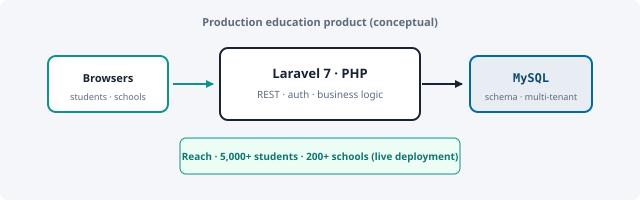

Engineering
Production systems first: named stacks, real throughput and user counts, and what each build was for.
Track record
Snapshots below follow problem → what shipped → number that proves scale or reach. Full timeline: CV.


What I have built & shipped
- Security analytics pipeline — Problem: correlate streaming security telemetry under burst load without silent drops. Shipped: Spark + Kafka + HBase + PostgreSQL ingest, optimized rule-engine path for network analytics. Scale: 30M+ events/day processed in production SIEM context.
- Education platform (Laravel) — Problem: schools needed a reliable practice product, not a demo. Shipped: schema, APIs, Laravel 7 services, deployment pipeline—owned architecture and client handoff. Reach: 5,000+ students, 200+ schools on the live system.
- PLC IDE–adjacent tooling (PhD) — Problem: verification ideas must compile and run beside engineers’ ST/C workflows. Shipped: transpilers, glue services, and integration experiments—not generic “scripts.” Outcome: feeds directly into published RV work (see Research / Publications).
How I work
- Clarify requirements with stakeholders; design for observability and maintainability.
- Prefer simple architectures until complexity is justified; automate repetitive work.
- Bridge formal specs and runnable code—useful in both verification research and production backends.
Python
C / tooling
Spark · Kafka
PostgreSQL · MySQL
Laravel · PHP
Linux · AWS
Java / Spring